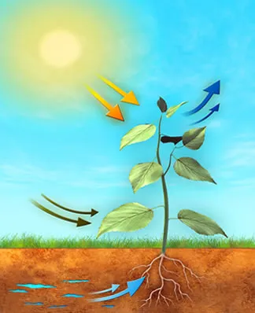

-
A fotossíntese é um processo que ocorre no interior da célula vegetal, a partir do CO2 (dióxido de carbono) e H2O (água), como forma de produzir glicose.
As plantas, algas, cianobactérias e algumas bactérias realizam fotossíntese e são denominados seres clorofilados, isso porque apresentam um pigmento essencial para o processo, a clorofila.
A fotossíntese ocorre nos cloroplastos, uma organela presente apenas nas células vegetais, e onde é encontrado o pigmento clorofila, responsável pela cor verde dos vegetais.
-
Os pigmentos podem ser definidos como qualquer tipo de substância capaz de absorver luz. A clorofila é o pigmento mais importante dos vegetais para a absorção da energia dos fótons durante a fotossíntese. Outros pigmentos também participam do processo, como os carotenoides e as fosforiladas.
A luz solar absorvida apresenta duas funções básicas no processo de fotossíntese:
Impulsionar a transferência de elétrons através de compostos que doam e aceitam elétrons.
Gerar um gradiente de prótons necessário para síntese da ATP (Adenosina Trifosfato - energia).
Processo da fotossíntese
Divisão em Etapas
-
Etapa Fotoquímica:
Como indicado pelo nome na primeira etapa é necessário que haja a luz do sol, que é absorvida pela clorofila para a fotofosforilação (produção de ATP) e fotólise da água (decomposição da água em gás oxigênio e íons de hidrogênio).
-
Etapa Química:
Etapa química, ou das reações de escuro: ocorrem diversas reações em que são produzidos glicídios a partir de moléculas de CO2 (do ar), de hidrogênio e da energia fornecida pelo ATP (ambos provenientes da primeira etapa).

-
Cloroplasto
Os cloroplastos são organelas presentes apenas em células de plantas e algas, nas regiões que ficam iluminadas. Possuem cor verde devido à presença de clorofila e são responsáveis pela realização da fotossíntese.
Podem ter formas e tamanhos diferentes, além do que, na célula pode haver apenas um ou uma grande quantidade deles, isso varia de acordo com o tipo de planta.
-

Estrutura
-
Geralmente a forma do cloroplasto é arredondada e alongada, mas pode ter outros formatos. Possui membrana lipoproteica dupla, sendo que a mais interna das membranas formam lamelas, compostas por pilhas lamelares menores, cada uma como se fosse uma pequena bolsa achatada, chamada tilacoide. Os tilacoides são interligados e ficam empilhados, sendo o conjunto chamado granum (do latim,granum= grão).
-
A etapa clara (conversão da luz em energia) acontece na região das membranas dos tilacoides, onde está concentrada a clorofila. Entre as membranas dos tilacoides há um espaço preenchido por um fluido e enzimas, DNA, RNA e ribossomos, sendo denominado estroma. É no estroma que acontece a etapa escura de produção dos açucares.